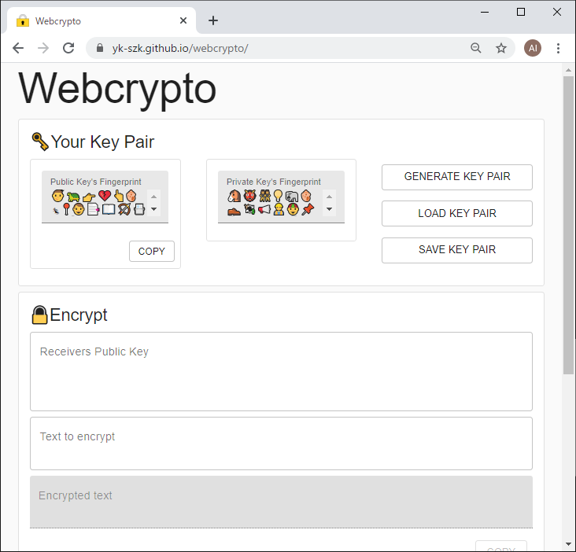
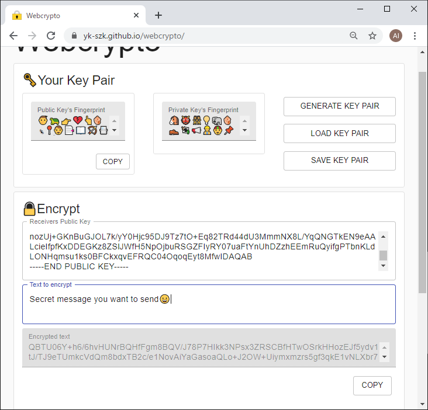
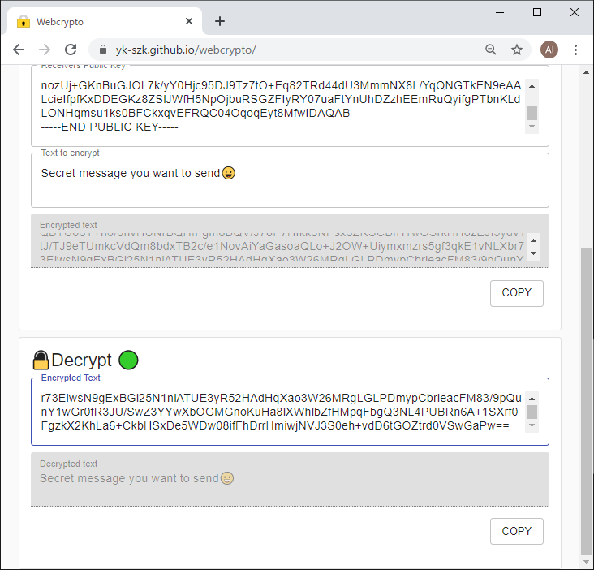

Webcrypto 使い方

初期画面
初めてページを開くとこのような画面になる。
「GENERATE KEY PAIR」ボタンを押下し鍵ペアを作成する。
以前に作成した鍵ペアがある場合は「LOAD KEY PAIR」ボタンを押下し鍵ペアを読み込む。

鍵ペア生成後
鍵ペアの生成が完了するとそれぞれの鍵のfingerprintが絵文字で表示される。 公開鍵(Public key)を相手に教える場合は「COPY」ボタンをクリックし公開鍵をクリップボードにコピーしたあと、 コピーした公開鍵をメール等を用いて相手に知らせる。
鍵ペアを保存する際は「SAVE KEY PAIR」ボタンを押下する。 保存した鍵ペアを読み込む際は「LOAD KEY PAIR」ボタンを押下し保存したファイルを選択する。
鍵ペアはブラウザ内に保存されるため次回以降ページを開いた際は、過去に生成された鍵が自動的に読み込まれる。

暗号化
暗号化は次の手順で行う。
- 「Receivers Public Key」欄に受信者の公開鍵を入力
- 「Text to encrypt」欄に暗号化する文字列を入力
- 「Encrypted text」欄に暗号化された文字列が出力される

復号
復号(暗号の解除)は次の手順で行う。
- 「Encrypted text」欄に暗号化された文字列を入力
- 「Decrypted text」欄に復号された文字列が出力される
復号を行う際は自分の秘密鍵(暗号化時に使用された公開鍵とペアとなっている鍵)が必要となる。